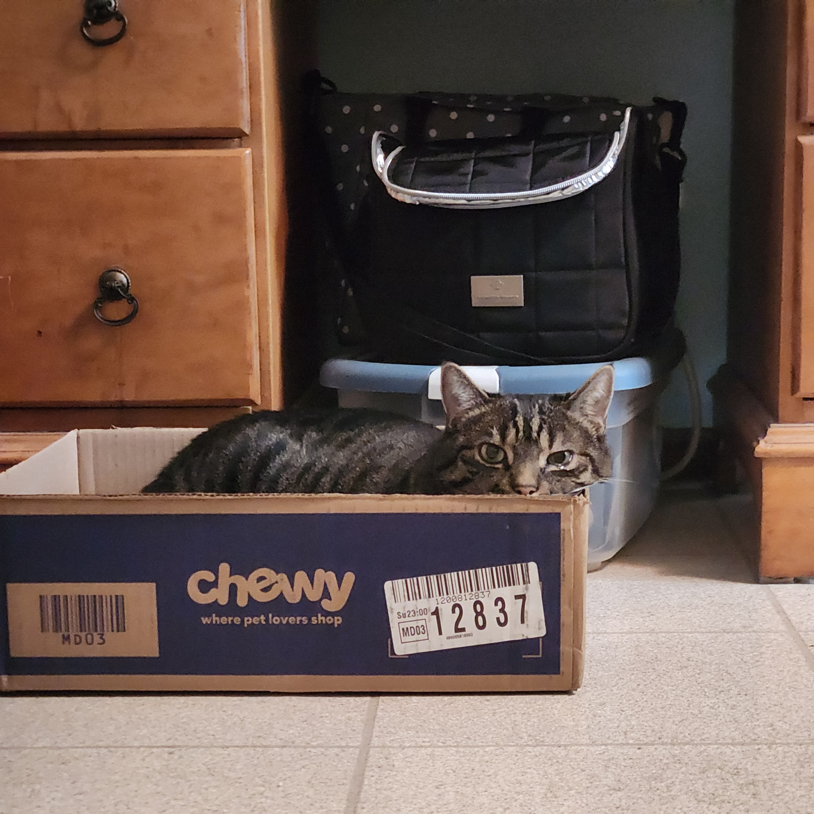

Home
The Glue Page
Questionnaire
Sources
Sources Cited:
Sites/Information:
tysonvw on armatures -
instructables.com
TheDaoDoughnut and users of r/DnDIY on glues -
reddit.com
Photos:
Angela Mia Studios, armature -
angelamiastudios.com
Michelle East, slip and score method -
createartwithme.com
Additional Credits:

My co-author, Alex.